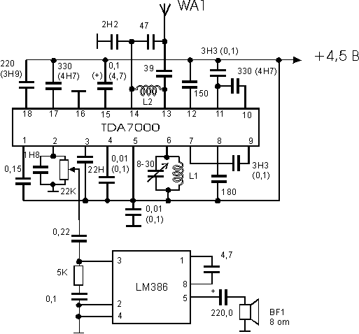
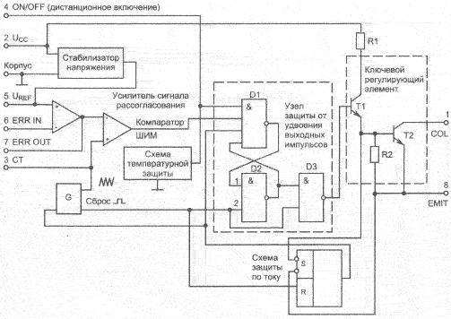
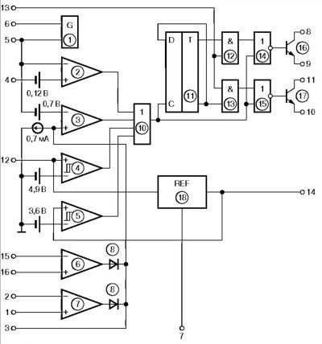

1.14.1. Основные типы электрических схем
Для изображения электронных устройств и их узлов применяется три основных типа схем:
- принципиальная схема;
- структурная схема;
- функциональная схема.
Различаются они своим назначением и, самое главное, степенью детализации изображения устройств.
Принципиальная схема — наиболее подробная. Она обязательно показывает все использованные в устройстве элементы и все связи между ними. Если схема строится на основе микросхем, то должны быть показаны номера выводов всех входов и выходов этих микросхем. Принципиальная схема должна позволять полностью воспроизвести устройство. Обозначения принципиальной схемы наиболее жестко стандартизованы, отклонения от стандартов не рекомендуются (Рис.11.1).
Структурная схема — наименее подробная. Она предназначена для отображения общей структуры устройства, то есть его основных блоков, узлов, частей и главных связей между ними. Из структурной схемы должно быть понятно, зачем нужно данное устройство и что оно делает в основных режимах работы, как взаимодействуют его части. Обозначения структурной схемы могут быть довольно произвольными, хотя некоторые общепринятые правила все-таки лучше выполнять (Рис.11.2).
Функциональная схема представляет собой гибрид структурной и принципиальной. Некоторые наиболее простые блоки, узлы, части устройства отображаются на ней, как на структурной схеме, а остальные — как на принципиальной схеме. Функциональная схема дает возможность понять всю логику работы устройства, все его отличия от других подобных устройств, но не позволяет без дополнительной самостоятельной работы воспроизвести это устройство. Что касается обозначений, используемых на функциональных схемах, то в части, показанной как структура, они не стандартизованы, а в части, показанной как принципиальная схема, — стандартизованы (Рис. 11.3).
В технической документации обязательно приводятся структурная или функциональная схема, а также обязательно принципиальная схема. В научных статьях и книгах чаще всего ограничиваются структурной или функциональной схемой, приводя принципиальные схемы только некоторых узлов.
Все узлы, блоки, части, элементы, микросхемы показываются в виде прямоугольников с соответствующими надписями. Все связи между ними, все передаваемые сигналы изображаются в виде линий, соединяющих эти прямоугольники. Входы и входы-выходы должны быть расположены на левой стороне прямоугольника, выходы — на правой стороне, хотя это правило часто нарушают, когда необходимо упростить рисунок схемы. Выводы и связи питания, как правило, не прорисовывают, если, конечно, не используются нестандартные включения элементов схемы. Это самые общие правила, касающиеся любых схем.